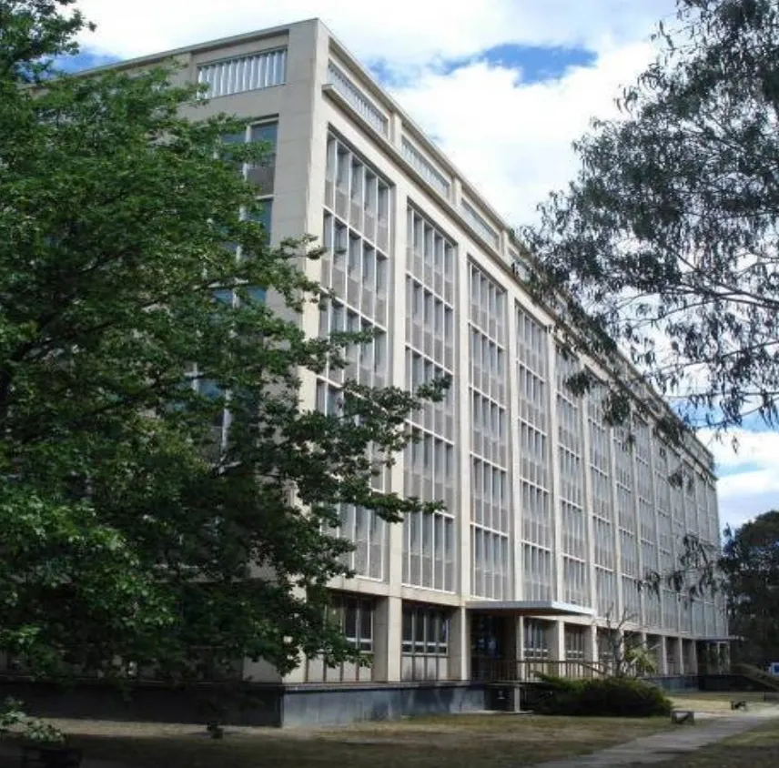
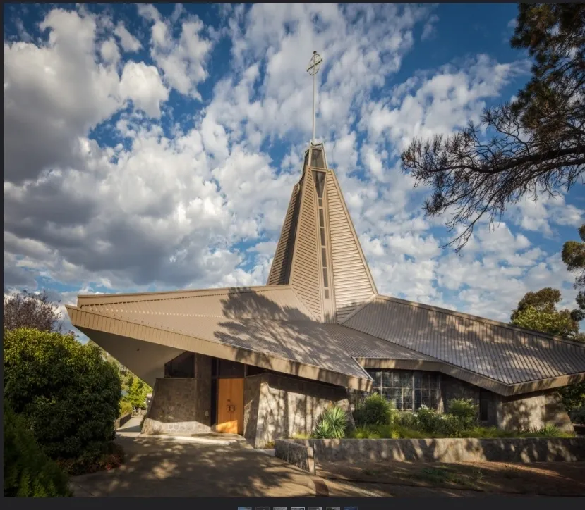
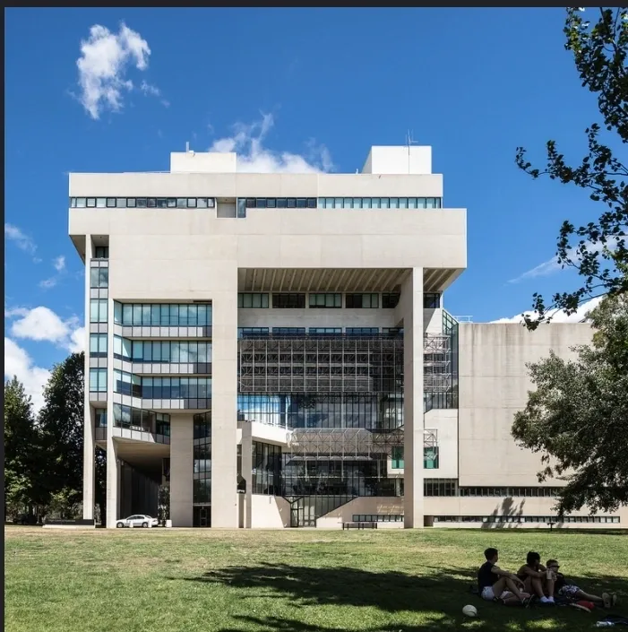
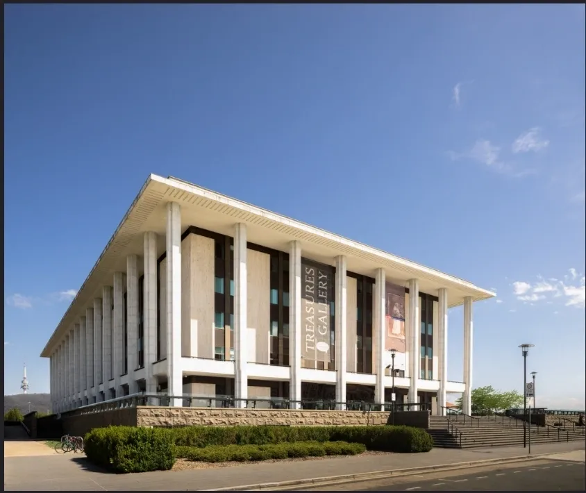
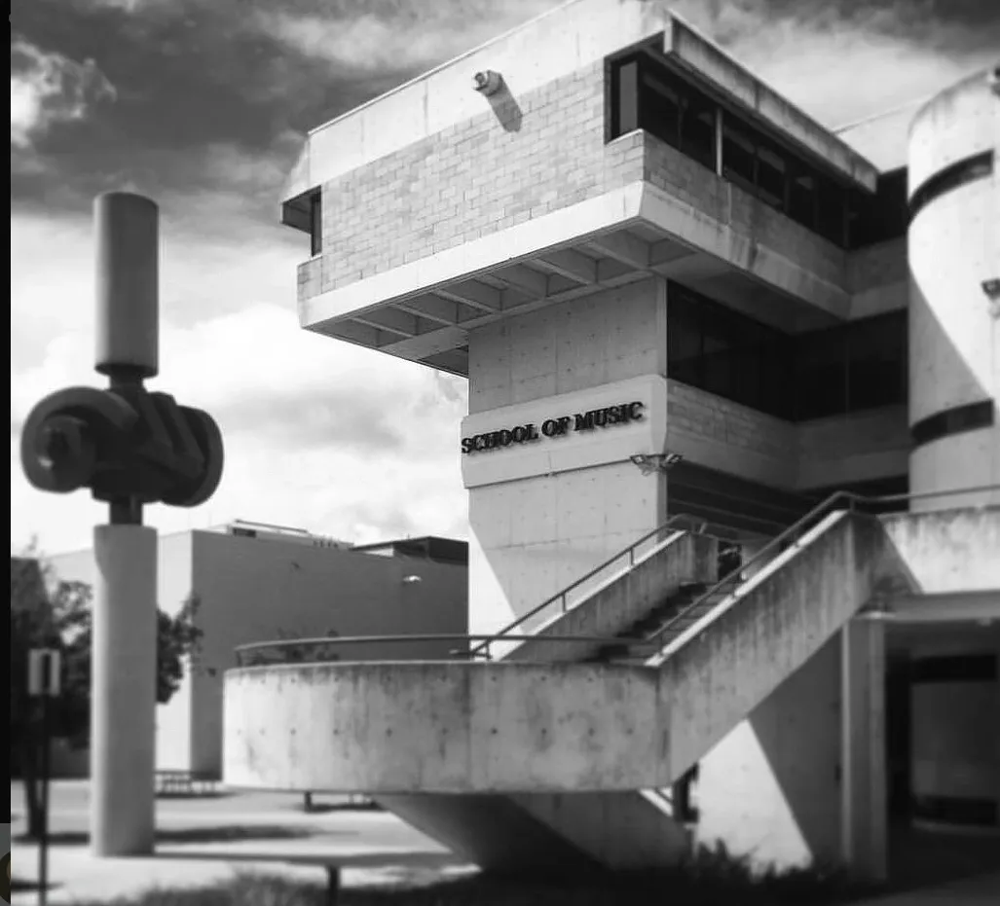
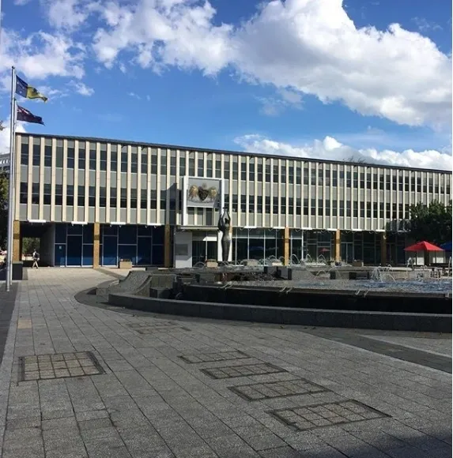
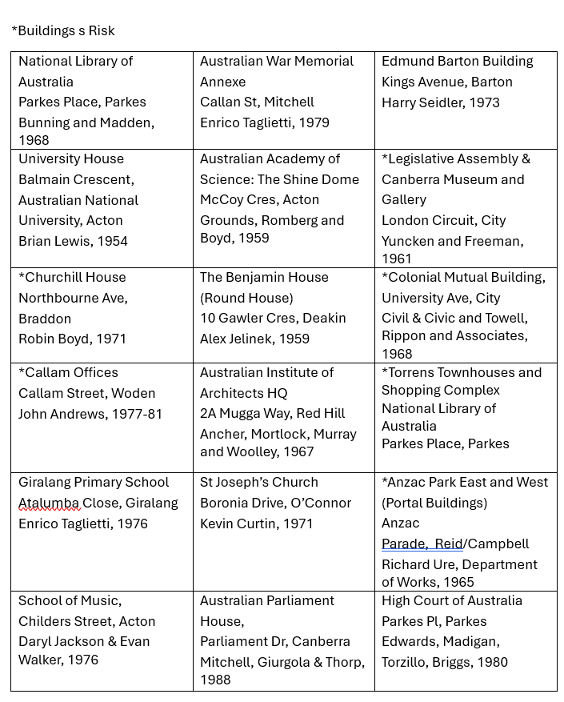

Explore Canberra Modern
The Mid & Late Century Modern Buildings highlights a curated selection of Canberra's modernist architecture, reflecting the city's strong mid-century development. The list includes both iconic landmarks and lesser-known buildings by leading Australian architects, while also drawing attention to sites at risk of being lost







Places to Visit
